The Sampras Serve-Racquet Head Speed¶
The Sampras Serve: Racket Head Speed
By John Yandell
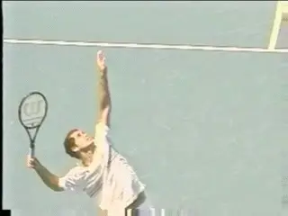
How fast is Pete's racket really going when - and for how long?
"Racket head speed." Everyone one talks about it. TV commentators claim they can see it. Every player wants it, and every coach claims to know its secret.
But have you ever actually heard a commentator or a coach tell you how fast the racket is going at various moments in the various strokes? No. And there is a reason for that. They have no idea because they have no evidence or data to back up their claims.
Does that type of evidence even exist? The answer is yes. Over the years there have been academic studies, but little or none of this data has ever filtered down into coaching, teaching or commentating.
Now the work of Brian Gordon is changing all that. We've already published his groundbreaking series on the biomechanics of the serve. () Now he and I are collaborating on another amazing project - the first ever 3 dimensional analysis of the serve of Pete Sampras - filmed in live competitive play.
Working with the TPA team, Brian completed a two camera high speed filming of Pete during an exhibition match versus Sam Querry, played at the Tiburon Peninsula Club, in beautiful Marin County, California. Then Brian went into a dark room with a few computers, some software, and tracked 25 different points on Pete's body and racket.
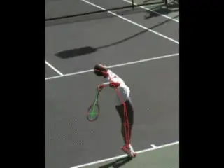
2 cameras at 200 frames per second tracking 25 points on the body and racket.
What was the outcome? A lot of incredible new information. But for the sake of simplicity in this series of articles, we decided to focus on one event, a first serve hit down the T in the ad court. More than likely, the general findings discussed below would be similar over the full range of his deliveries.
To me what made this collaboration so exciting is that right from the start Brian agreed to let me ask my own questions of this data. That doesn't necessarily mean, by the way, that he and I will agree on every point of interpretation. That would be impossible and it isn't the goal anyway.
But I do believe the results will lead us to a greater understanding of Pete's serve and also of the technical elements involved in all high level serving. I also know this article will stimulate further discussion - between myself and Brian, as well as other coaches, and everyone else in the TPA community.
I'm sure Brian and I will agree on much, but we'll both probably be disappointed if we don't find at least a few issues to debate. (I could have said argue.)
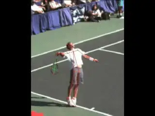
New data bases are the key to discussion and collaboration.
And that is one of the main points. We are past the stage in the history of coaching where one all-seeing individual has all the answers. The sport is just too complex and the motions too dynamic, and--up until the last few years - our tools, primarily the naked eye, have been far too limited. Now through the development of extensive new data bases - both qualitative and quantitative--we are in a phase where our understanding of the game can really advance.
In future articles we will take a quantitative look at other aspects of Pete's motion beyond the basic analysis of racket speed. For example, the path of the racket. At any given moment how much is it moving upward, downward, sideways, forward or back?
And the actual biomechanics. How fast are the various parts of his body moving? In what direction and for how long? What are the angles of the legs, shoulders, hips, hitting arm, etc, at the critical moments and how they relate to each other?

How much will we have to modify or previous analyses?
To me one of the fascinating aspects will be seeing what the numbers tell us about the accuracy of the analyses I've done in previous articles on Pete's serve. These are the qualitative high speed video analysis I did in conjunction with our 3D filming ([]), and the longer series of articles on Pete's motion I did that was one of the seminal components when we launched TPA over 6 years ago. ([].) How much of all that will this new perspective confirm, and how much needs modification?
A Simple Question
But in this article, let's start with what seems like a simple question. How fast is Pete's racket really going during the service motion? And by that we are referring to the speed of the center of the racket - the part of the string bed that makes contact with the ball.
I think the answer is going to surprise you. I believe the data shows that some of the most common assumptions about how racket speed develops are misleading.
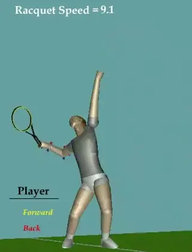
Advance the animation and study Pete's racket head speed for yourself.
The Answers
Brian's camera's filmed Pete at 200 frames a second. Because the motion takes around 2 seconds from start to finish, that means we have about 400 points where we can stop and see how the racket is moving.
Let's start with the key moment - contact--the moment of truth when the racket is about to strike the ball. According to Brian's data Pete's racket was traveling about 90mph in that last fraction of a second just before contact.
There were no radar guns to give us the ball speed, but the Australian physicist Rod Cross has estimated on a first serve the ball is traveling about 1.35 times the speed of the racket at contact. So this means the ball speed was somewhere above 120mph.
So the racket itself is going much slower that the ball. That in itself is interesting news. But the more interesting question is how is that 90mph of racket speed really created?
One common theory is that the wind up and the backswing develop racket speed gradually over the course of the motion, that it's a long, slow build up over the course of the stroke.
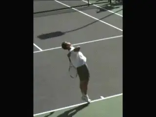
30mph to 90mph in about 1/10th of a second.
But the data shows exactly the opposite. There is no gradual build up. The vast majority of the racket speed is actually created in the last 1/10 of a second before contact. That is 1/10 of one second in a 2 second long motion. In that 1/10 of a second interval, the racket head accelerates from 30mph all the way to 90mph.
This critical final burst begins from what we have called the pro racket drop position. The racket has fallen along his right side with the tip pointing downward at the court. The plane of the racket face forms a right angle with the torso.
At that point the racket has reached a speed of 30mph. In the next 1/10th of a second this triples from 30mph to 90mph at the contact. Building that initial 30mph took about a second and a half, or three quarters of the overall time of the motion. Then the other 60mph - two thirds of the total speed is generated in a blinding flash.
Rather than thinking of the wind up and backswing as continuously building speed, it is probably more realistic to think of them as setting up Pete's body and racket for a violent explosion. Getting to that drop position is critical, and this fact explains why a player like Jay Berger, who reached the top 10 in the world, could serve well over 100mph with no windup, literally starting from the drop position.
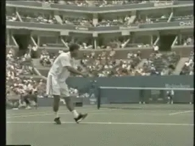
The Arm Drop: a half second develops 3.5mph of racket speed.
The First 30
The bulk of the acceleration may have occurred in a fraction of the overall time increment, from the racket drop to the contact. But how the racket reached that speed of 30mph at the drop turns out to be fascinating in its own right.
Creating this initial 30mph took exponentially longer and may not account the bulk of the racket speed, but obviously it is still important, since it does actually account for a third of the overall racket speed at contact.
Does this longer, slower movement leading to the drop fit better with the continuous acceleration theory?
Interestingly the answer is no, not really. This is because racket goes through 3 distinct phases on the way to the drop, all of which are quite different. Together they may account for ¾ of the time of the motion, but in each phase the speed of the racket changes by different amounts at different rates in intervals of different lengths.
[Phase 1] [Speed at [Speed at [Gain in [Duration Start] End] Speed] (Approx)] [The Arm [0 mph] [3.5 [3.5 [1/2 Drop] mph] mph] second]
In Pete's motion the first of the 3 phases is the arm drop. At the start of his motion, he drops his arms until they both point more or less directly downward at the court. Interestingly, the racket doesn't really accelerate during this phase.
From the ready position until the completion of the arm drop the speed of the racket is virtually constant - between 4 and 5 mph. In fact when the arms reach the bottom of the drop, the racket actually slows slightly to about 3.5 mph.
Just this segment of the motion takes over a quarter of the entire duration of the serve, a total of about a half second. So after half a second, a quarter of the total time, Pete's racket is traveling at less than 5mph.
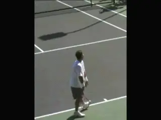
The move to the Power Position takes the speed to 10mph.
The Power Position
What happens next? The second phase is from the completion of the arm drop to the classic power position in which the tossing arm and the racket tip are pointing directly upward.
To reach this position, Pete uses a partially abbreviated wind up. This means that after the arms drop, he begins to raise the racket arm and racket from the shoulder. But he also begins to bend the elbow. This combination movement takes him to the power position.
During this phase, the racket actually starts to accelerate, compared to the virtually even speed during the arm drop.
From 3.5mph at the arm drop, the racket reaches 10mph at the power position, a gain of 6.5mph. The acceleration is also quite even over the course of this phase, increasing only slightly as the racket gets closer to the power position.
But this move to the power position is also the part of the motion that takes the longest - over a second and a half. So, again, the surprise is how little speed is really developed during this interval.
Phase 2 Speed at Speed at Gain in Duration Start End Speed (Approx) Arm Drop to Power 3.5 mph 10 mph 6.5 mph 1.5 Position seconds
So, again, from the arm drop to the power position there is a gain of 6.5mph, but that is still a long way from the 90mph racket speed at contact. Pete is now more than two thirds of the way through the duration of motion and his racket speed has only reached 10mph, a little more than 10% of its eventual top speed.
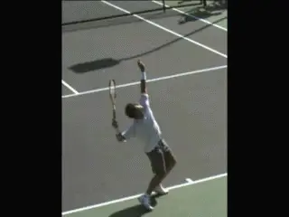
Things start to speed up as the racket drops, gaining 20mph in 2/10 of a second.
Power Position to the Drop
The next phase is the movement from the power position to the racket drop. This is where things start to happen a lot more quickly. Here we see a big jump in racket speed in a very short interval.
In 2/10s of a second the racket moves from 10mph to 30mph. It took Pete almost a second and a half to create the first 10mph of racket speed. Now in a blink of an eye he triples it.
But as with the previous phase from the arm drop to the power position, the rate of acceleration is quite even. As the racket tip falls, Pete's upper arm is rotating backwards in the shoulder joint. In the first 15 or so frames the racket picks up about 5 mph.
Thereafter, it adds another 5mph about every 8 frames, until it reaches 30mph. The racket has now reached the drop position and is positioned for the final explosion to contact.
Phase 3 Speed at Speed at Gain in Duration Start End Speed (Approx) Power Position To\ 10 mph 30 mph 20 mph .2 seconds Racket Drop
Drop to Contact
What happens in the move from power position to the drop is in some ways a harbinger of what is about to happen because the racket speed increases so much more dramatically in such a shorter interval, compared to the first 2 phases.
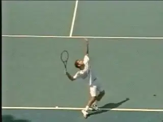
The bulk of the speed developed in a few 10ths of a second.
In the move to the contact, however, it is far more extreme. The racket picks up 3 times as much speed but in half the time, accelerating, as we have seen, from 30mph to 90mph in 1/10 of a second.
But in addition to the huge gain in racket speed, there is another characteristic to this phase that separates it from those leading up to it. This is how rapidly the racket accelerates.
In the move to the contact, the acceleration of the racket increases almost literally frame by frame as the racket approaches contact. Instead of gaining about the same amount of speed in each frame, the racket gains more and more the closer to approaches to the ball.
In the first 10 frames of the upward motion the racket gains 5mph and is traveling 35mph. But just 3 frames later it has gained another 5mph. Then in 3 more frames it gains 9mph. At this point the racket is still on edge and is traveling at a speed of 50mph.
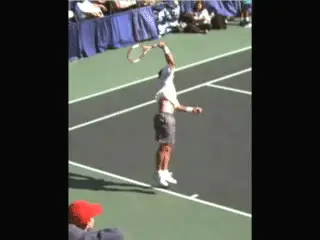
As the hand turns in the last 6 frames the racket gains 40mph.
Now the hand and arm start to turn the racket toward the ball and the acceleration jumps once again. In the next 4 frames the racket head gains 24 mph to reach a speed 74mph. This gain of 24mph happens in 2/100's of a second!
These changes are becoming more and more difficult even to visualize. But there are still two more frames before contact.
In each of these last 2 frames, the racket adds 8mph more so this additional 16mph takes the racket to its maximum speed of 90mph speed just before contact. This gain of the final 16mph takes only 1/100 of a second!
Phase 4 Speed at Speed at Gain in Duration Start End Speed (Approx) Racket Drop To 30 mph 90 mph 60 mph .1 seconds Contact
Deceleration
This speed data we have looked at so far is amazing and in and of itself raises many questions to ponder. But really, we have only told half the story of racket speed in the motion. To understand the motion more fully we have to consider the data on the racket speed deceleration after contact.
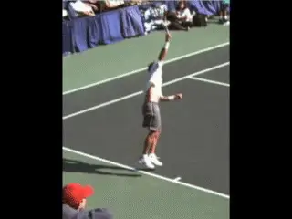
From 90mph to 30mph in the same interval.
The story here is equally fascinating. The contact knocks 20mph off the racket speed virtually instantaneously. This takes it down from 90mph down to about 70mph. And this deceleration then continues at an extremely rapid pace.
Within about 1/10 of second after contact, the speed is back down to about 30mph. At this point the racket tip is pointing more or less directly down at the court, and the famous Sampras elbow bend in the followthrough is clearly visible.
So there is an interesting symmetry here. It took the racket about 1/10 of a second to go from 30mph to 90mph from the drop to the contact. Now in about the same interval, 1/10 of a second, the racket has dropped back down from 90mph to 30 mph.
Think about that! In 2/10s of one second, the racket goes from 30mph to 90mph and then back from 90mph to 30mph. That's a total speed change of 120mph in a total 2/10s of a second! And these mind boggling changes have occured in a very small fraction of the overall time interval of the motion.
This racket deceleration continues on as the motion finishes. Another 1/10 of a second later, the racket speed has dropped all the way back down to less that 5mph. And no, you didn't see any of that with your naked eye.
And the Meaning?
So what does that all mean? If your head is spinning, mine is as well. These are many issues we will try to sort out in more detail later in the series, but for now there are a few obvious general points.
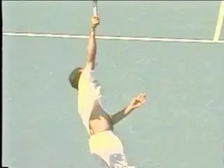
Pronation and the High Elbow position - 2 elements in the deceleration phase.
First the real attention for players in maximizing their own racket speed has to be on what is happening in the motion that critical instant between drop and contact. The wind up and the backswing are generating some racket speed for sure, but their greater purpose appears to be to position the racket, body and ball for that explosive split second when the bulk of the racket head speed is developed in the movement upward to the ball.
One other fascinating implication is what the data reveals about elements in the motion that coaches and players often identified as causes of racket head speed. One of these is pronation. A second, often seen as unique in Pete's case, is his high elbow position in the followthrough.
Pronation is a tricky term because in coaching lexicon it has become associated with the counter clockwise turning of the racket face after contact. Technically though, in biomechanical terms, it refers only to the rotation of the forearm between the elbow and the wrist. The reality is that as the racket goes up toward contact, it is actually rotating from the shoulder as well.
Regardless, when we look at the position of the racket as it moves into the followthrough, we can see that the racket has actually lost half its speed at what is usually identified as the point of maximum "pronation." This is with the racket face on inverted edge.
Click here to study Brian's 200 frame per second video for yourself.
At that point the racket is traveling only about 45mph. So there is no way pronation, as it is generally understood, can be "causing" racket head speed.
The same point can be made about the elbow position. At the time that famous elbow bend becomes most prominent, the racket has slowed down even further to about 24mph.
So it's the same about the elbow bend, as with pronation. They can't be generating racket speed. They seem to be more effects than causes. They may be evidence of a great motion, but that evidence is more of a by product.
So if pronation and or the high elbow position are effects, what are in fact is the cause of racket speed in Pete's serve?
Is it the path of the racket to the ball? The position of the ball at contact? Pete's physical flexibility and the relaxation in the motion? All of the above? Or something else?
Good questions. As we work through the data on the other aspects of the motion, we'll see what light may be shed. Stay tuned.
To view the complete Stroke Archives of Pete Sampras serves, [] click here.

John Yandell is widely acknowledged as one of the leading videographers and students of the modern game of professional tennis. His high speed filming for Advanced Tennis and TPA have provided new visual resources that have changed the way the game is studied and understood by both players and coaches. He has done personal video analysis for hundreds of high level competitive players, including Justine Henin-Hardenne, Taylor Dent and John McEnroe, among others.
In addition to his role as Editor of TPA he is the author of the critically acclaimed book Visual Tennis. The John Yandell Tennis School is located in San Francisco, California.